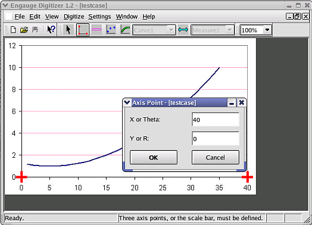
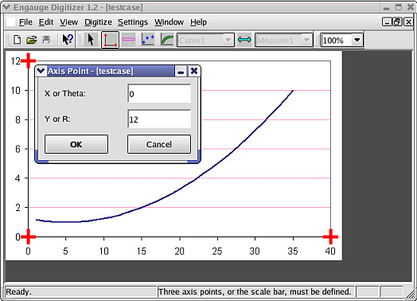
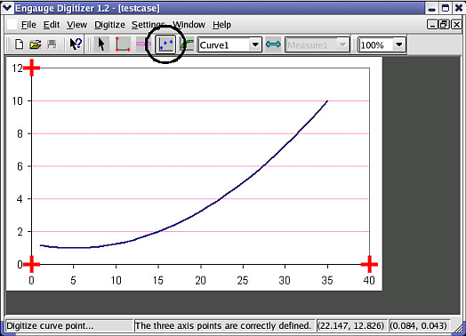
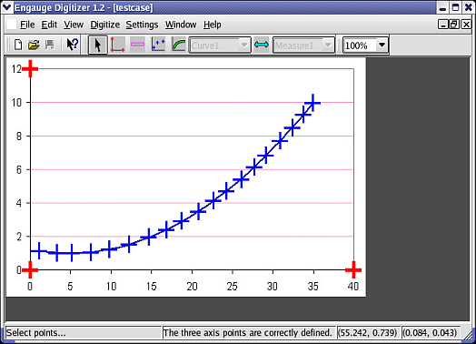
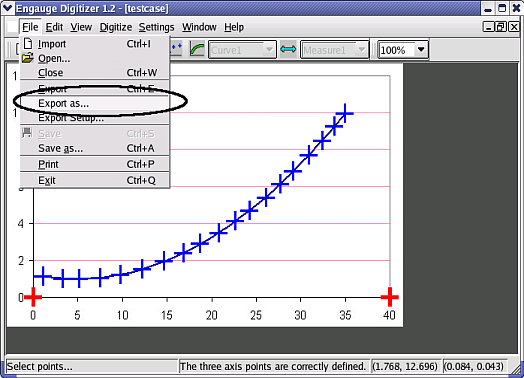

Engauge Digitizer - Manual Line Graph Tutorial
Engauge Digitizer - Manual Line Graph Tutorial
Manually Digitizing A Line Graph Image
The following steps manually digitize a linear cartesian graph with
one curve. These steps are essentially the same as the
steps involved in manually
digitizing a point graph.
- Import the testcase.png case from the Samples directory, using
File/Import as shown. Not shown are the other methods of importing:
using the "-import" command line option,
by copying and pasting, and by dragging and dropping

- Click on the Axes Point button before entering axes points. These will
define the coordinate system

- Click on one of the axes to add the first axes point, then enter its
graph coordinates

- Click on one of the axes to add the second axes point, then enter its
graph coordinates

- Click on one of the axes to add the third axes point, then enter its
graph coordinates

- Click on the Curve Points button before entering curve points. These
will contain the digitized graph data

- Click on the curve to add a curve point. Repeat until the graph is
covered with a sufficient number of curve points. If this step is too
slow and tedious, you can first automatically digitize entire segments
at a time using segment fill

- Export the curve points into a tabular text file using the
File/Export As menu option as shown. Not shown are the other methods of
exporting the curve points from the
curve geometry window: copying and pasting,
and dragging and dropping
